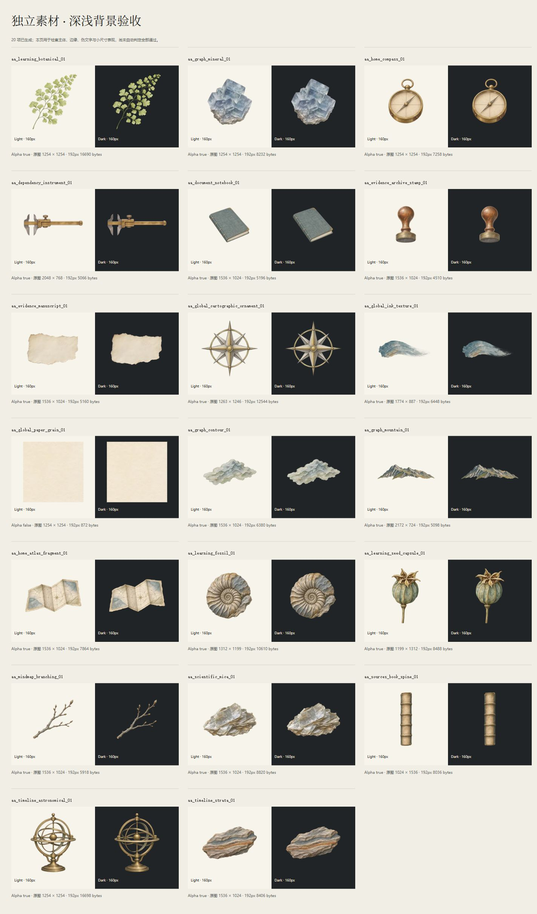

ATELIER ATLAS / ART DIRECTION v3.1 / ARCHIVE EDITORIAL一个品牌，知识的多种观察方式。
A方向已落实到共享前端组件。以下为实际运行截图：32组工作区主截图、36组专业视图主截图，另有平板/窄屏、空态和密集数据检查。所有知识对象为明确标注的本机合成验收数据。
独立审查结论：部分完成 · 查看规划余项
实时预览需要本机服务运行；本页截图可以离线查看。真实用户数据库没有用于此演示。受字段约束的关键路径、封面/缩略图等能力，在完成清单中保留为余项。
20项独立素材 · 深浅底配对检查
独立PNG原图、每项3个WebP变体和对应Prompt均已保留。图片不替代数据图谱、坐标、文字与证据。

逐项用途和审核记录
断点、状态与关键交互证据